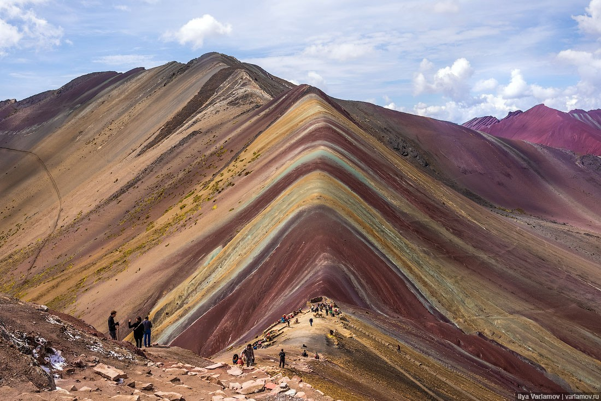
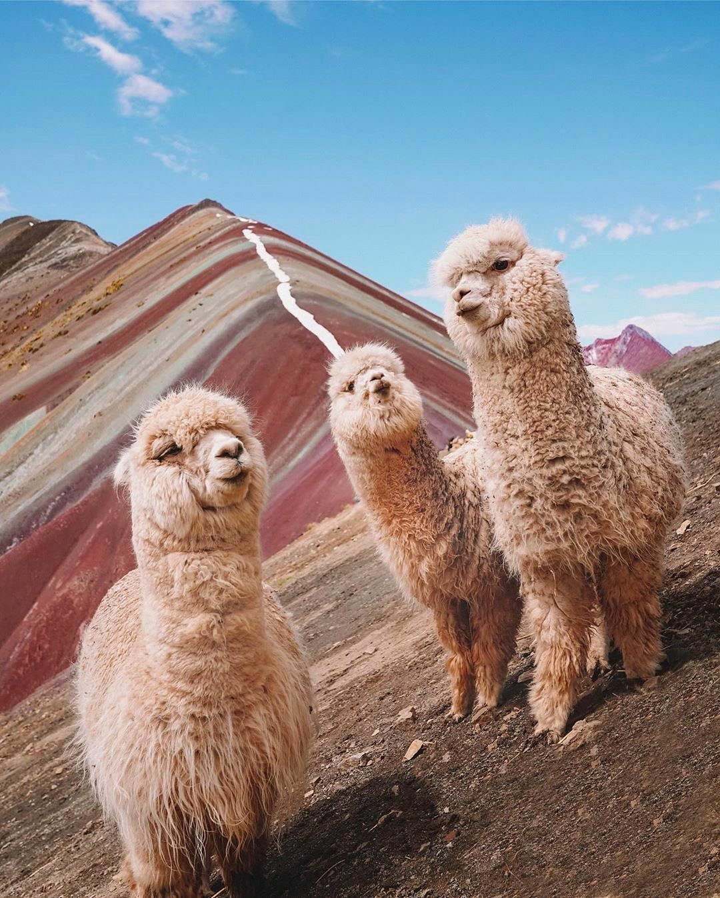

Площадь Перу — 1 285 220 км². Страна граничит на северо-западе с Эквадором, на
севере с Колумбией, на востоке с Бразилией, на юго-востоке с Боливией и Чили. На западе омывается Тихим океаном. Общая протяжённость
границы 5536 км (протяжённость границ с Боливией — 900 км, с Бразилией — 1560 км, с Чили — 160 км, с Колумбией — 1496 км, с
Эквадором — 1420 км). Длина береговой линии: 2414 км.
В Перу традиционно выделяются три чётко обособленных природные региона: Коста — притихоокеанская
пустынная
полоса
(шириной 80—180 км) на западе, Сьерра — обширная горная область Перуанских и Центральных Анд в центральной
части, Сельва —
влажно-лесные предгорья и равнины восточной части страны.
Коста занимает около 12 % площади Перу. Береговая линия Тихого океана изрезана очень слабо; выделяются
небольшие бухты Сечура,
Писко и полуостров Паракас. Вдоль побережья расположено свыше 80 мелких скалистых островов с залежами гуано
(Лобос-де-Тьерра,
Лобос-де-Афуэра и др.)
Область Сьерры (около 28 % площади Перу) протягивается через всю территорию страны в виде пояса шириной
200—500 км. Её северную
часть составляют Перуанские Анды, южную — Центральные Анды. Перуанские Анды включают Западную, Центральную и
Восточную
Кордильеру Анд, вытянутые с северо-запада на юго-восток и разделённые продольными долинами рек Мараньон,
Мантаро
и Уальяга.
В горном массиве Кордильера-Бланка находится высшая точка страны — гора Уаскаран высотой 6768 м.

Радужные горы в Куско*
Преимущественно равнинная и наименее освоенная Сельва занимает 60 % территории страны. На северо-востоке
рельеф представлен
обширными озёрно-аллювиальными низменными равнинами западной части Амазонской низменности с густой сетью
широких
речных долин
(так наззываемых Низкая Сельва), на юго-востоке — возвышенными наклонными предгорными равнинами Ла-Монтанья,
осложнёнными
невысокими останцовыми грядами (Серра-ду-Дивизор и др.)

В составе фауны — свыше 500 видов млекопитающих, свыше 420 видов пресмыкающихся, около 540
видов
земноводных, свыше 1000 видов пресноводных рыб*
Перу находится в южном полушарии, поэтому сезоны там противоположны нашим: когда у нас зима, там лето и
наоборот. Погода
зависит от климатической зоны.
Большая часть страны — влажные джунгли, или сельва. Летом (декабрь-апрель) здесь в среднем от +18 до
+27°C,
зимой (июнь-октябрь)
— от +16 до +26°C.
В центральной и восточной части Перу — горная зона, или сьерра. Климат тут зависит от высоты. На высотах
до
3500 м климат
умеренный, температура зимой +4...+6°С, летом — до +16...+17°С, а в долинах — до +24°C. Выше начинается зона
с
ярко выраженным
горным климатом: температура тут зимой от 0 до −7 °C, летом +3...+7°С. Вершины гор круглый год покрыты
снегом и
льдом.
На побережье океана — косте — сухо и прохладно, потому что там проходит холодное течение Гумбольдта.
Самый
жаркий период —
с декабря по апрель. В июле (в разгар зимы) температура держится +15-18 °C днем и +12 °C ночью.